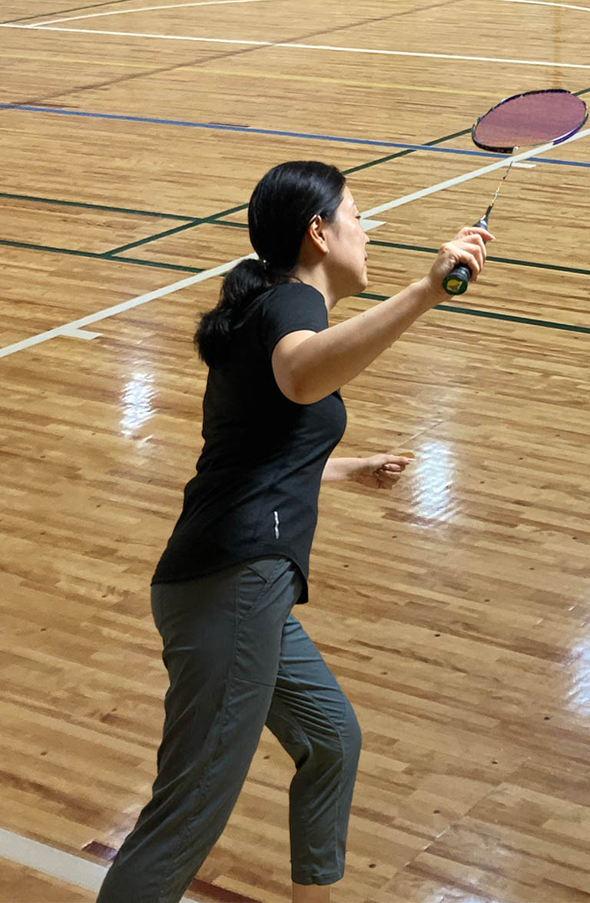
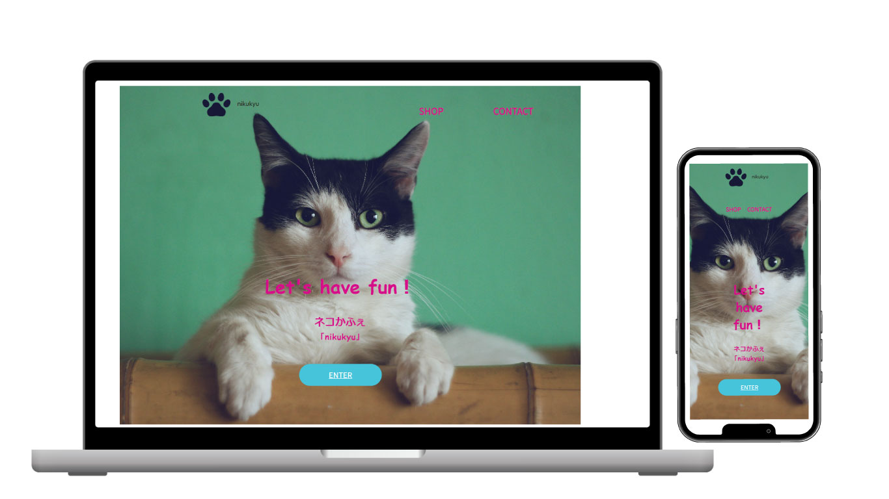
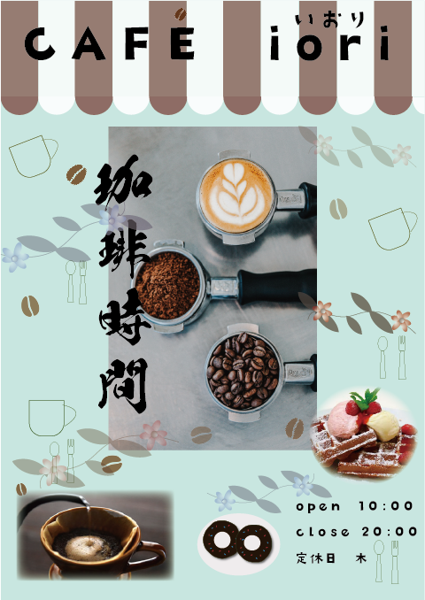
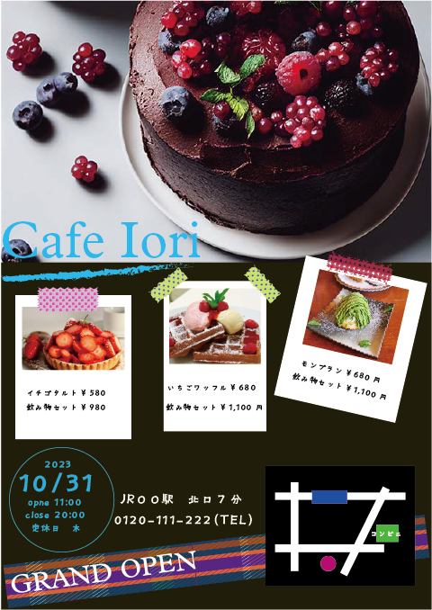
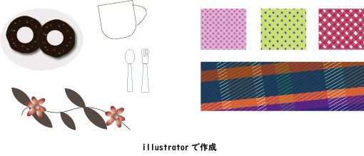

Hiramatsu Naoko
平松 直子
自宅で開く書道教室のホームページを作りたくhtmlやCSS、jQueryを中心にWebの勉強を始めました。今後はPHPのスキルの習得を目指します。
About Me
埼玉県出身で現在は愛知県在住です。
趣味はバドミントンで大学生の息子と一緒に会社の仲間や地元の友人と汗を流しています。
自宅で書道教室を開く準備をしており
ホームページを自分で作ってみたくWebの業界に興味を持ちました。
Skills
Webサイト制作
HTMLやCSS、jQueryを使ってサイト制作ができます。現在wordpresを勉強中です。
Photoshop・Illustrator
旅行先で撮った写真をフォトショップやイラストレーターを使いオリジナルのアルバムにしたり年賀状の作成、ポストカードの作成などをしています。
書道
毛筆２段。夫（師範）のサポートですが書道教室で子供たちに教える予定です。
作品

ジャンル・タイトル
ネコカフェ nikyu
製作期間
1週間
製作で使用したツール
html css jQuery Photoshop illustrator
ポイント
すっきりシンプルなトップ画面をイメージして作成しました。


製作で使用したツール
Photoshop illustrator
作品のポイント
左側は配色を明るくしポップな雰囲気を出し気軽に入りやすいカフェをイメージして作成しました。
右側は暗めの配色で高級感を出しつつマスキングテープでおしゃれな感じも兼ね備えた見た目にしました。
